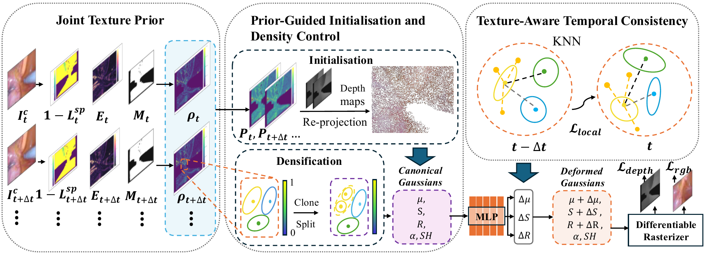
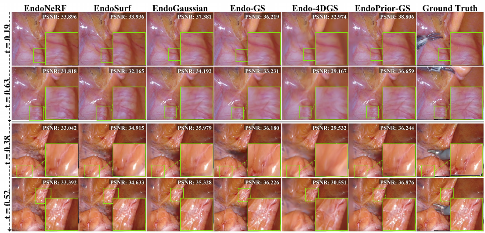
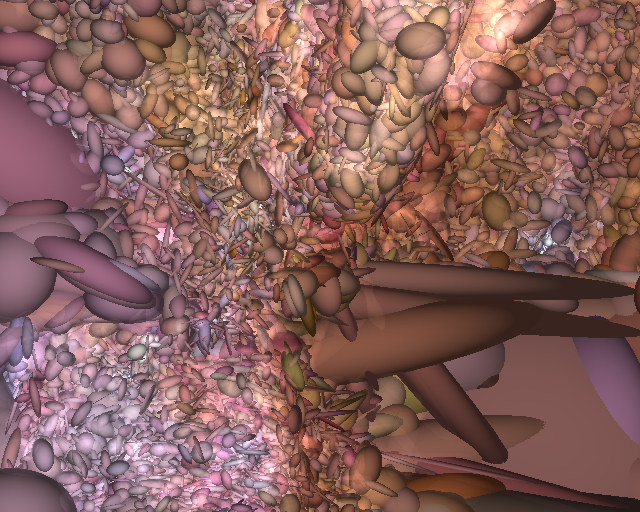
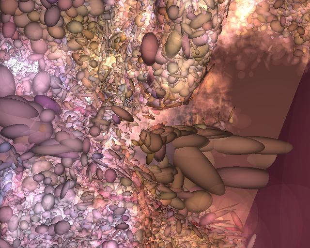

EndoPrior-GS: Dynamic Endoscopic Reconstruction
with a Joint Texture Prior
ACCV 2026
*Corresponding author: Shidong Wang
1School of Engineering, Newcastle University
2School of Computing, Newcastle University
Abstract
Dynamic endoscopic reconstruction is fundamental to robotic surgery and computer-assisted interventions. While 3D Gaussian Splatting (3DGS) realises real-time rendering, its application to deformable intraoperative environments remains constrained by phantom geometry and varying illuminations. To address these limitations, we introduce EndoPrior-GS, a novel pipeline that explicitly couples frame-extracted vision heuristics and estimated depth maps. EndoPrior-GS derives a joint texture prior from a tool-filtered valid tissue mask, a non-specular photometric filter, and anatomical structural salience, yielding a probability map that guides primitive initialisation and subsequent density control. The prior is further extended to the temporal domain through a texture-aware term that dynamically weighs pairwise primitive contributions during training. We conduct extensive experiments on benchmark datasets EndoNeRF and SCARED, and the obtained results show that our method EndoPrior-GS reduces Flow Error by 27.7% and 25.8% over the representative approaches while preserving competitive rendering quality and real-time rendering speed.
Method Overview

SOTA Comparison

Gaussian Primitive Comparison

